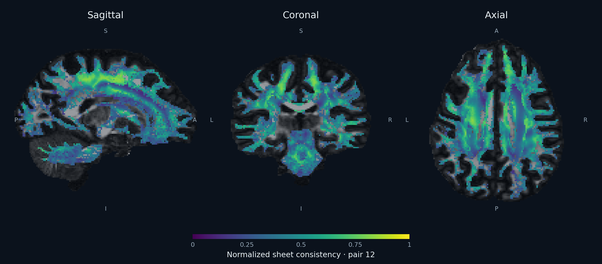

Direction fields
Sheets
Can nearby fiber directions fit together into a sheet?
Two crossing fiber directions define a local plane. Sheets measures how these planes fit together across a neighborhood.
Lower q means more sheet-like. The normalized measures Srelative and Sbounded approach 1 as the organization becomes more sheet-like.

